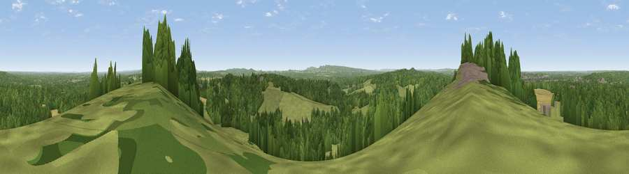

Viewpoint near Puttenham
#10795 in England · top 5% of its area beats it · near PuttenhamWhere it is
The exact computed spot (SU 91375 48325). Click the marker for map links.
The view, rendered

A 360° render of this exact spot computed from the terrain model, tree cover and land cover — summer colours, afternoon light, calibrated against photographs of famous viewpoints. Real trees, hedges and buildings will differ in detail.
The panorama
Grey silhouette: terrain skyline in each direction (720 bearings, Earth curvature and refraction included). Dashed green: skyline with trees (+15 m) and buildings (+8 m) as obstacles. Blue strip: how far the ground is visible on each bearing.
Where the view opens
Wedge length = distance to the farthest visible ground on that bearing (vegetation-aware). Rings at 10, 25 and 50 km.
What fills the view
50% woodland · 38% grassland · 9% cropland · 4% built-up
Angular shares of the visible panorama (visual magnitude), not map area. Landscape diversity 0.46 (0–1 Shannon).
Key numbers
More beautiful places nearby
The staircase of upgrades: each row has a higher view potential than everything closer. Driving times are estimates from straight-line distance, calibrated against real road routing — check an actual route before setting out.
| Place | Direction | Drive | Score |
|---|---|---|---|
| Viewpoint near Wanborough | E · 3 km | ~7 min | 65.5 |
| Viewpoint near Compton | E · 5 km | ~10 min | 66.7 |
| Viewpoint near Hascombe | SE · 13 km | ~24 min | 70.1 |
| Viewpoint near Fernhurst | S · 19 km | ~33 min | 75.1 |
| Linch Down | SSW · 32 km | ~49 min | 85.2 |
| Beacon Hill | SSW · 32 km | ~49 min | 85.8 |
| Chanctonbury Ring | SSE · 43 km | ~63 min | 87.0 |
| Firle Beacon | SE · 71 km | ~94 min | 88.9 |
51.22681, -0.69280 · source: screening · position refined by local search. Computed location — check access rights before visiting.